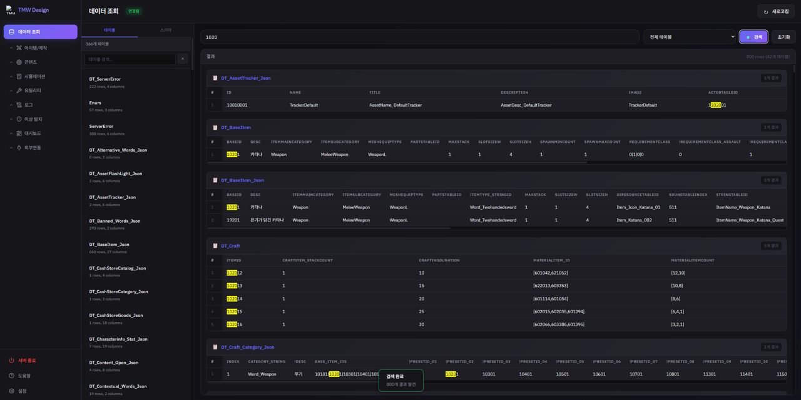
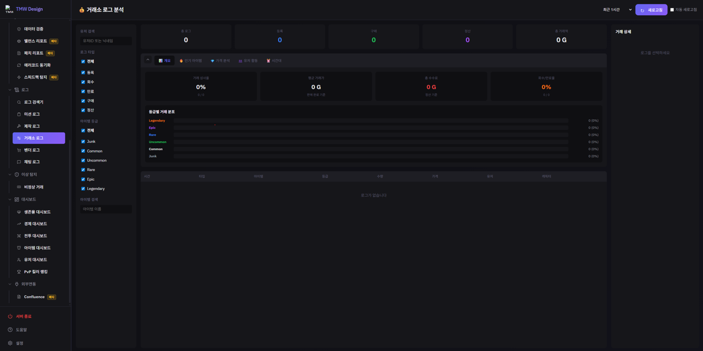

02 · AI 도구 활용
AI로 만든 기획 데이터 도구
주로 Claude Code를 썼습니다. 개인 생산성 도구에 그치지 않고, 기획팀이 함께 쓰는 데이터 검증, 로그 분석 도구를 만드는 데 썼습니다. 아래 데모는 실제 사내 도구를 가상 데이터로 다시 구성한 것이라, 이 페이지 안에서 바로 조작해 볼 수 있습니다.
무엇을, 왜, 어떻게 만들고 어떻게 검증했나
도구 이름을 누르면 아래에서 해당 데모가 열립니다.
| 결과물 | 풀려던 문제 | AI 활용 방식 | 검증과 결과 |
|---|---|---|---|
| 데이터 뷰어 | 아이템 이름이 테이블 3개를 거쳐 완성되는데, 참조가 끊기거나 문자열이 빠져도 겉으로는 알기 어려움 | 키 값 하나로 전체 테이블을 검색해 참조 체인을 보여주는 도구를 Claude Code로 제작 | 끊긴 참조, 문자열 누락, 미사용 데이터를 한 번에 확인. 데모에서는 일부러 넣은 오류 3건을 찾아내는 시나리오로 보여줌 |
| 거래 로그 뷰어 | OpenSearch 기본 대시보드로는 원하는 시각화가 어렵고, 기획자와 매니저도 로그를 쉽게 볼 수 있어야 했음 | 원시 로그를 경제 분석 대시보드로 바꾸는 도구를 Claude Code로 제작 | 개발 중 등록 로그만 보면 안 팔린 매물이 최고가 순위에 섞이는 문제를 발견해, 거래 ID로 등록과 구매 로그를 매칭하고 체결된 거래만 집계하도록 수정 |
| 전투 로그 뷰어 (무기 픽률, 승률) | 출시 후 무기 선택과 성능을 감이 아니라 로그로 확인하고 싶었음 | 입장 로그와 킬 로그를 결합하고, 킬 로그에 없는 피해자의 무기는 입장 로그를 역추적해 집계하는 도구를 제작 | 데스가 보유 무기 전부에 집계되는 한계를 밝히고, 전체 평균을 기준선으로 삼아 상대 비교로만 해석. 표본이 적은 무기는 걸러서 봄 |
| 맵 지니 | 레벨 맵의 아이템, 몬스터, 기믹 스폰 위치와 드롭 확률을 지도 위에서 한 번에 확인하고 싶었음 | 맵 이미지 위에 스폰 위치를 겹쳐 보여주고 드롭 테이블과 연결하는 도구를 여러 세션에 걸쳐 점진적으로 개선 | 아이템 이름으로 검색하면 그 아이템을 드롭하는 오브젝트만 지도에 표시되어, 배치와 드롭 데이터를 한 화면에서 확인 |
| 제작대 인터랙티브 프로토타입 | 문서만으로 설명하기 어려운 3단 화면과 성장 흐름을 합의해야 했음 | 클릭해 볼 수 있는 HTML 프로토타입을 AI로 제작 | 직접 눌러 보며 규칙을 확인하고, 3D 프리뷰 회전과 알림 조건 등을 문서에 반영 |
| 경제 대시보드 점검 | 대시보드 집계가 실제 로그와 맞는지 확인이 필요했음 | 집계 로직을 직접 점검 | 로그 필드 불일치로 코인 수입이 실제의 1/10로 과소 집계되던 문제를 찾아 수정 |
데모 직접 조작하기
탭을 눌러 도구를 바꿔 볼 수 있습니다. 로그 데이터, 무기 이름, 수치는 실제 서비스 데이터가 아닌 가상 데이터이고, 구조와 동작 방식만 재현했습니다.
DataViewer
JSON 게임 데이터를 SQL처럼 조회하는 도구
이 도구의 핵심은 단순 조회가 아니라, 키 값 하나를 전체 테이블 대상으로 한 번에 검색해 참조 무결성을 확인하는 것이었습니다.
아이템 이름은 Item.BaseID → BaseItem.StringTableID → String.Korean 3단계를 거쳐야 완성되는데,
이 체인 어딘가가 끊기거나 안 쓰이는 데이터가 남아있어도 겉으로는 티가 안 납니다. 아래 데모는 그 체인을 재현하고,
키 검색으로 끊긴 참조·미사용 데이터를 실제로 찾아냅니다.
테이블·컬럼명·데이터는 전부 가칭으로 재구성한 샘플입니다 (실제 게임 스키마 아님).
ResolvedName의 "String 없음"은 참조하는 StringTableID가
String 테이블에 없어 이름이 끊긴 데이터를, RefCount의 "0건 (미사용)"은 어떤 Item도 참조하지 않는
미사용 데이터를 뜻합니다. 실제 업무에서도 이런 표시로 대량의 테이블 중 정리가 필요한 항목을 빠르게 찾아냈습니다.
표 우측 하단 표시 개수 옆의 Error N건이 현재 탭에 몇 건의 이상이 있는지 바로 보여줍니다.

키 값 하나로 166개 전체 테이블을 검색해 42개 테이블·800건의 사용처를 한 번에 확인하는 실제 화면입니다.

아이템 이름으로 스폰 그룹 테이블을 검색해 해당 아이템의 실제 획득처(드랍 경로)를 추적하는 실제 화면입니다.
TradeLogViewer
거래소 원시 로그를 경제 분석 대시보드로 바꾸는 도구
기획자·매니저도 OpenSearch 없이 시각적으로 정리된 정보를 볼 수 있어야 했는데, OpenSearch 기본 제공 대시보드만으로는
원하는 방식의 시각화에 한계가 있어 직접 개발했습니다. 개발 중 거래 등록 로그만 보면 "최고가 매물"에
실제로 안 팔린 아이템이 섞여 나오는 문제를 발견해, TradeId로 등록·구매 로그를 매칭해 실제로 체결된
거래만 걸러내도록 수정했습니다. 아래 데모에서 우측 상단 "체결된 거래만 보기" 토글을 꺼보면 그
차이를 직접 확인할 수 있습니다.
로그 데이터는 실제 서비스 로그가 아닌 데모용으로 가상 재구성했습니다.
| 시간 | 유형 | 아이템 | 등급 | 수량 | 가격 | 거래ID | 구매자 |
|---|
TradeId로 구매 로그와 매칭된, 실제로 체결된 거래만 집계합니다. 개발 중 실제로 겪었던
데이터 착시 문제를 그대로 재현한 것입니다.

사내에서 실제로 사용 중인 거래소 로그 분석 화면입니다. 로그 검색 결과는 비밀 유지를 위해 포함하지 않았습니다.
BattleLogViewer
출시에 맞춰 만든, 무기 선택과 승률을 읽는 전투 로그 분석 도구
개발 단계에서는 로그 분석보다 개발 속도와 QA 편의가 먼저라 맵 지니·데이터 뷰어 같은 도구를 만들었습니다. 출시 시점부터는 유저가 실제로 무엇을 고르고 어떻게 싸우는지 바로 확인할 수 있어야 해서, 로그 분석 툴을 추가로 구축했습니다. 아래는 그중 무기 분석 화면을 가상 데이터로 재구성한 데모입니다. 모드·클래스·슬롯과 최소 표본을 바꿔보며 무기별 픽률과 승률을 확인하고, "픽률 × 승률" 탭에서 밸런스 논의 대상이 되는 무기를 찾아보세요. 로그 데이터와 무기 이름, 수치는 실제 서비스 데이터가 아닌 데모용으로 가상 구성했습니다.
- 픽률: 입장 로그에서 유저가 들고 들어간 무기(주무기·보조무기)를 집계합니다.
- 킬: PvP 킬 로그에 기록된 처치 무기를 집계합니다.
- 데스: 킬 로그에는 피해자의 무기가 없어서, 피해자의 입장 로그를 (매치, 유저) 키로 역추적해 입장 시 보유한 무기에 집계합니다.
- 승률 = 킬 ÷ (킬 + 데스). 데스가 보유한 무기 전부에 잡히므로 평균 승률은 50%보다 낮게 나오고, 그래서 전체 평균을 기준선으로 삼아 평균 대비 높고 낮음을 판단합니다.
해석할 때 주의한 점: 입장 후 무기를 바꿔도 데스에는 반영되지 않고, 데스는 보유한 무기 전부에 잡히므로 절대 수치보다 무기 간 상대 비교에 적합합니다. 표본이 적은 무기는 승률이 극단값이 되기 쉬워, 데모에서는 최소 표본 기준으로 걸러서 볼 수 있게 했고 픽률과 승률은 함께 봐야 합니다.
MapGenie
맵 위에 스폰 데이터를 시각화하는 도구
레벨 맵 이미지 위에 아이템/몬스터/기믹 스폰 위치를 겹쳐 보여주는 도구입니다. 검색 버그 수정 → 검색 캐싱 → 타입별 필터 오버레이 → SVG 아이콘 도입 → Enum 연동 한글 표시 → 드롭테이블 연동 순으로, 여러 세션에 걸쳐 점진적으로 다듬었습니다. 상자·아이템 스포너를 클릭하면 등급별 드롭 확률과 드롭 아이템 목록이 표시되고, 아이템 이름으로 검색하면 해당 아이템을 드롭하는 오브젝트만 지도에 필터링되어 표시됩니다. 맵 이미지는 실제 사용 중인 레벨 디자인 블루프린트이며, 스폰 위치/드롭 데이터는 데모용으로 가상 재구성했습니다.

사내에서 실제로 사용 중인 맵지니 화면. "드링크"로 검색해 병원 수술실 맵 위에 드랍 포인트만 필터링해 보여주는 모습입니다.
AI를 쓰는 방식
단발성 코드 생성이 아니라, 반복되는 개발, QA, 문서화 과정을 함께 설계하고 자동화하는 방향으로 썼습니다.
맥락을 이어받는 작업
CLAUDE.md와 날짜별 세션 로그를 도입해, 새 세션도 이전 작업의 맥락을 이어받게 했습니다. 작업 기록과 재현이 가능합니다.
Markdown세션 로그사내 문서와 코드에 연결
UE5 C++ 소스에서 Enum과 Struct를 조회하는 MCP 서버, 기획서를 검색하고 정합성을 확인하는 MCP 서버를 TypeScript로 직접 만들어, AI가 사내 코드와 문서까지 참조하게 했습니다.
MCPTypeScript반복 작업의 표준화
로그 뷰어를 손으로 4번 만든 뒤 공통 클래스로 뽑아내고, 슬래시 커맨드(스킬)로 자동 생성되게 했습니다. 세션 로그를 스스로 분석해 스킬 후보를 찾는 스킬도 만들었습니다.
스킬화BaseLogViewer출시에 맞춘 로그 분석
개발 중에는 개발 속도와 QA 편의를 위한 도구를 먼저 만들었고, 출시 시점부터는 유저 행동을 바로 확인할 수 있도록 로그 분석 툴을 추가했습니다. 콘텐츠, 경제, 무기 선택과 이탈 구간을 밸런스 논의의 근거로 씁니다.
OpenSearch로그 분석웹 밖의 도구까지
기획팀 실무자가 쓰는 Excel(VBA) 기반 데이터 편집기 5종(스폰 에디터, 크래프트 에디터 등)을 만들고 유지보수했습니다. 한글 인코딩 처리 같은 공통 패턴은 여러 툴에 재사용했습니다.
VBA비개발자용 툴AI 없이도 도는 도구
Claude Code 없이도 동작하는 Perforce diff 기반 QA 리포트 툴을 만들어, AI로 만든 도구가 AI 없이도 팀에서 쓰이게 했습니다.
QAbat · PowerShell · Node만들어 온 과정
세션이 쌓일수록 도구 자체가 나아지는 구조를 만들었습니다.
CLAUDE.md + 날짜별 세션 로그(.claude/session-logs/) 구조를 도입해, 매 세션이 이전 맥락을 이어받도록 함. 이후 모든 작업의 기록·재현이 가능해짐.
Perforce/UE5 C++ 소스를 분석하는 tmw-analyzer, Confluence 기획서를 검색·검증하는 confluence-mcp-server를 TypeScript로 직접 구현해 Claude의 지식 범위를 사내 코드/문서까지 확장.
로그 뷰어 모듈을 4번 손으로 반복 제작한 뒤 BaseLogViewer 공통 클래스로 추출, /new-log-viewer 스킬로 자동 생성 전환. 세션 로그 자체를 분석해 스킬 후보를 뽑는 session-insights 메타 스킬까지 구축.
개발 단계에서는 개발 속도와 QA 편의를 위한 도구(맵 지니, 데이터 뷰어)를 먼저 만들었고, 출시 시점에 맞춰 유저 행동을 바로 볼 수 있는 로그 분석 툴(거래 로그, 전투 로그의 무기 픽률·승률 등)을 추가로 구축.
경제 대시보드 집계 로직을 점검하다 로그 필드 불일치(@timestamp vs Time)로 코인 수입이 실제의 1/10로 과소 집계되던 문제를 발견·수정.
Claude Code 세션 없이도 동작하는 Perforce diff 기반 QA 리포트 툴(bat + PowerShell + Node)을 산출 - AI로 만든 도구가 AI 없이도 팀에서 굴러가는 단계까지 확장.